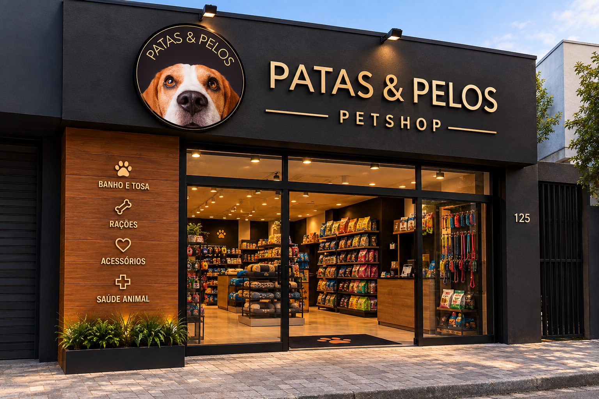

Nossas unidades
Conheça os espaços da Patas & Pelos e escolha a unidade para o atendimento do seu pet.

Unidade Centro
Um espaço pensado para cuidar do seu pet com conforto, atenção e carinho. Consulte os serviços disponíveis e escolha a melhor opção de agendamento.
Endereço e horário de funcionamento: a confirmar.
Agendar serviçoUnidade Sul
Atendimento dedicado ao bem-estar de cães e gatos, com um ambiente acolhedor para serviços e cuidados do dia a dia.
Endereço e horário de funcionamento: a confirmar.
Agendar serviço